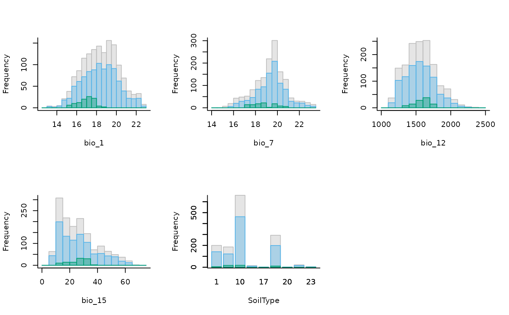

plot_explore_calibration.RdPlots histograms to visualize data from an explore_calibration object
generated with the explore_calibration_hist function.
plot_explore_calibration(explore_calibration, color_m = "grey",
color_background = "#56B4E9",
color_presence = "#009E73", alpha = 0.4,
lines = FALSE, which_lines = c("cl", "mean"),
lty_range = 1, lty_cl = 2, lty_mean = 3,
lwd_range = 3, lwd_cl = 2, lwd_mean = 2,
xlab = NULL, ylab = NULL, mfrow = NULL)an object of class explore_calibration generated
by the explore_calibration_hist function.
(character) color used to fill the histogram bars for the entire area (M). Default is "grey".
(character) color used to fill the histogram bars for background data. Default is "#56B4E9".
(character) color used to fill the histogram bars for presence data. Default is "#009E73".
(numeric) opacity factor to fill the bars, typically in the range 0-1. Default is 0.4.
(logical) whether to add vertical lines to the plot representing the range, confidence interval, and mean of variables. Default = FALSE.
(character) a vector indicating which lines to plot. Available options are "range", "cl" (confidence interval), and "mean". Default is c("range", "cl", "mean").
(numeric) line type for plotting the ranges of variables. Default is 1, meaning a solid line.
(numeric) line type for plotting the confidence interval of variables. Default is 2, meaning a dashed line.
(numeric) line type for plotting the mean of variables. Default is 3, meaning a dotted line.
(numeric) line width for the line representing the range. Default is 3.
(numeric) line width for the line representing the confidence interval. Default is 2.
(numeric) line width for the line representing the mean. Default is 2.
(character) a vector of names for labeling the x-axis. It must
have the same length as the number of variables. Default is NULL,
meaning the labels will be extracted from the explore_calibration
object.
(character) the label for the y-axis. Default is NULL, meaning the y-axis will be labeled as "Frequency".
(numeric) a vector specifying the number of rows and columns in the plot layout, e.g., c(rows, columns). Default is NULL, meaning the grid will be arranged automatically based on the number of plots.
# Import raster layers
var <- terra::rast(system.file("extdata", "Current_variables.tif",
package = "kuenm2"))
# Import occurrences
data(sp_swd_cat, package = "kuenm2")
# Explore calibration data
calib_hist <- explore_calibration_hist(data = sp_swd_cat,
raster_variables = var,
include_m = TRUE)
# Plot histograms
plot_explore_calibration(explore_calibration = calib_hist, mfrow = c(2, 3))
